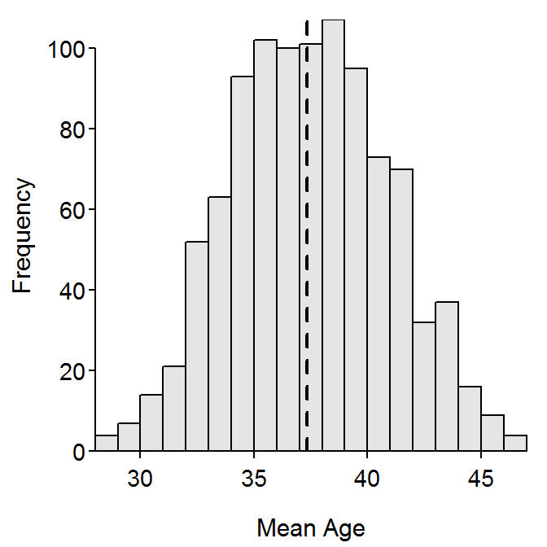
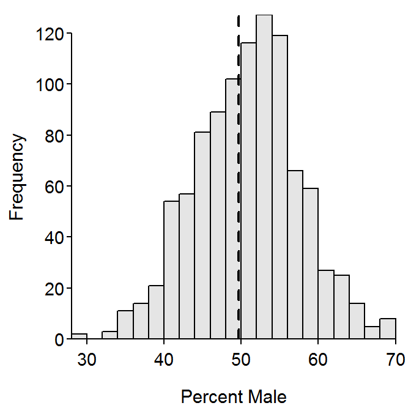

The following code is used to produce a “live” example for class. The meaning of this code will be explained later. For now, we simply want the results that are produced.
Type the code exactly as shown in each grey box and attempt to answer the follow-up questions.
> library(NCStats)
> data(ABCens90)
> ( smp1 <- srsdf(ABCens90,50) )
> Summarize(~age,data=smp1,digits=1)
> percTable(xtabs(~sex,data=smp1))
> ( smp2 <- srsdf(ABCens90,50) )
> Summarize(~age,data=smp2,digits=1)
> percTable(xtabs(~sex,data=smp2))
> Summarize(~age,data=ABCens90,digits=1) n mean sd min Q1 median Q3 max percZero
30335.0 37.3 24.3 0.0 16.0 35.0 57.0 96.0 1.2 > percTable(xtabs(~sex,data=ABCens90))sex
female male Sum
50.30822 49.69178 100.00000
